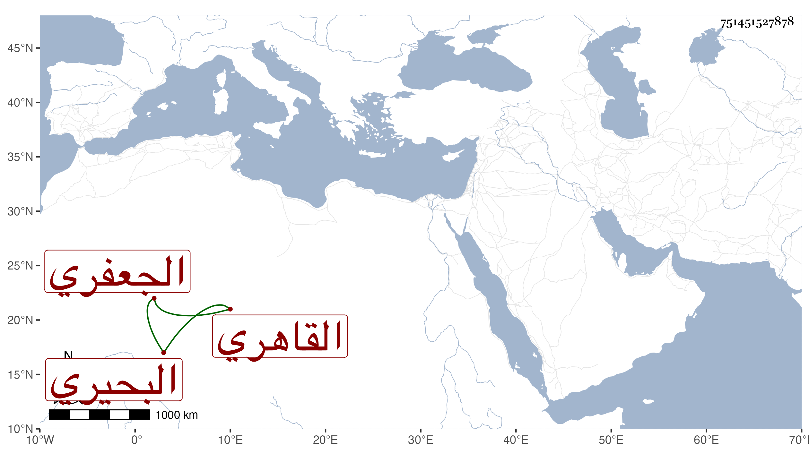

0902Sakhawi.DawLamic.ITO20230111-ara1.EIS1600.751451527878
Biography ID: 751451527878
700
خضر بن موسى بن خضر بن علي البحيري الأصل الجعفري ثم القاهري . رجل عشير فيه ظرف ومجون وطبع يزن به الشعر ممن خالط ابن عبد الرحمن صيرفي جدة وغيره كبني الجيعان وصار يتكلم عنهم في بعض جهات الأشرفية مع محافظة على الجماعة ومجالس الخير بحيث سمع على غالب السيرة النبوية وحج غير مرة ، وقد أثكل ولدا له كان متوجها للخير فصبر .
